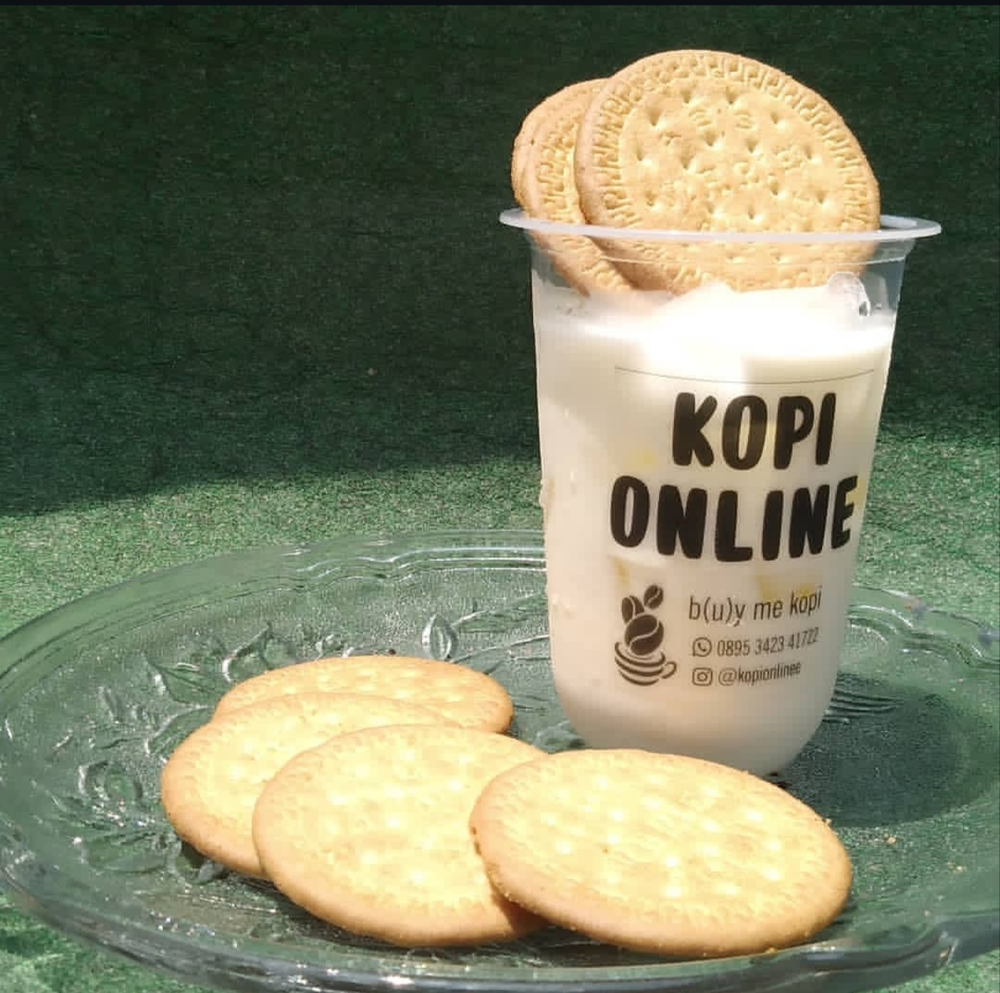
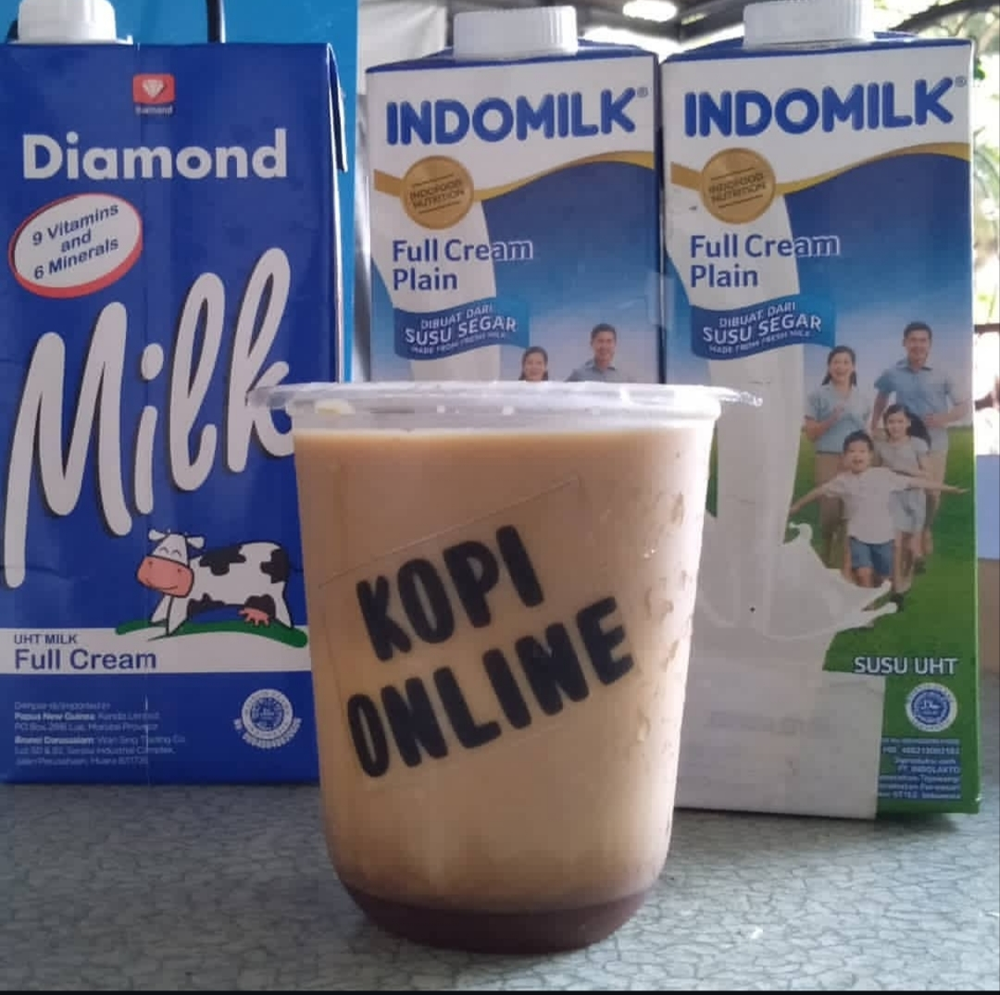
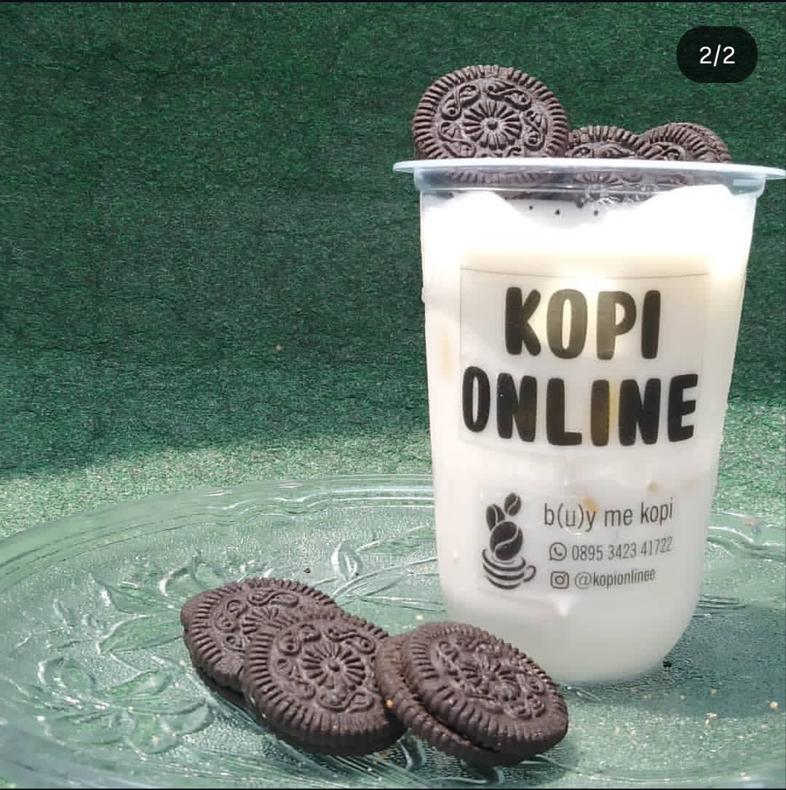

Cerita Tentang Kesegaran
Lihat MenuKenali minuman dan makanan kami

"Marie Fresh Milk adalah minuman susu segar dingin yang dicampur dengan biskuit Marie yang dihaluskan. Rasanya manis lembut, creamy, dan ada aroma biskuit yang gurih-manis. Tekstur remah biskuitnya membuat minuman ini terasa seperti dessert dalam gelas."

Kopi Brown Sugar adalah minuman kopi susu dengan perpaduan rasa manis legit dari sirup gula aren atau gula cokelat (brown sugar), gurihnya susu segar, dan pahit khas espresso. Rasa manisnya terasa karamel dan sedikit smoky, sehingga lebih kaya dan tidak terlalu tajam dibanding pemanis biasa. Minuman ini biasanya disajikan dingin dengan es batu. Sirup brown sugar dituang di dasar gelas hingga membentuk lapisan cokelat pekat yang menempel di dinding gelas, lalu dilengkapi susu dan espresso di atasnya. Hasilnya adalah tampilan berlapis yang menarik dan cocok untuk difoto."

Susu segar dingin yang creamy dengan remahan biskuit Oreo yang dihaluskan, lalu dihias beberapa keping Oreo utuh di atas gelas. Rasanya manis, lembut, dan ada sensasi cokelat renyah dari biskuitnya. Cocok jadi minuman penyegar sekaligus dessert.
Lahir: 02 Oktober 2007
Prodi: D3 Sistem Informasi